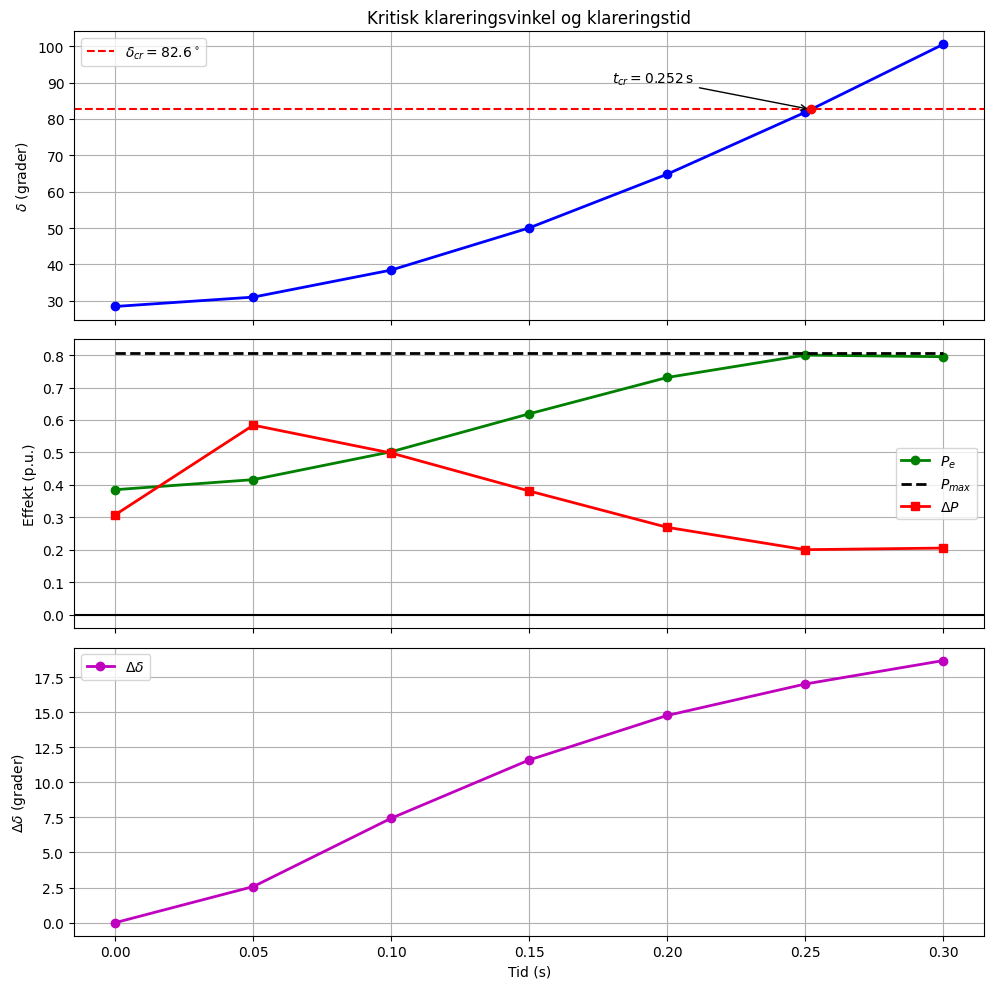
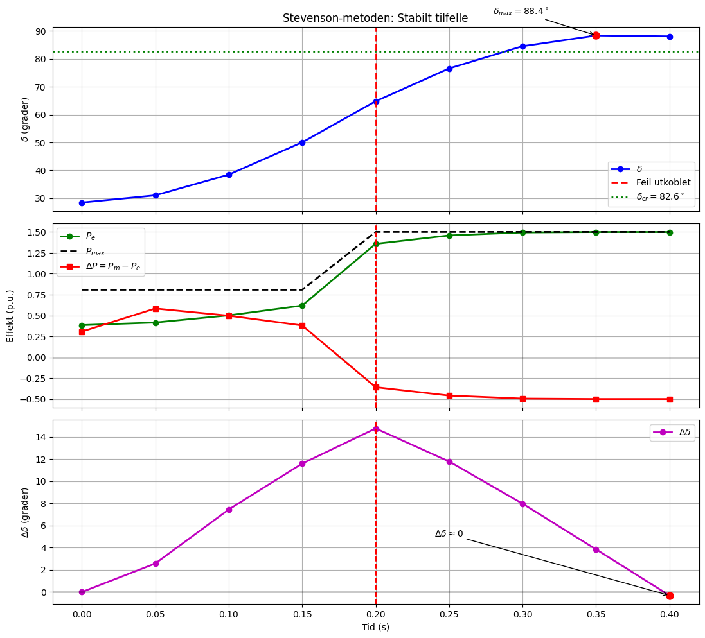

Bestemmelse av \(\delta_{cr}\) og \(t_{cr}\) ved EAC og Stevenson#
Data#
Før feil:
\( P_e = 2.10\sin\delta \)
Under feil:
\( P_e = 0.808\sin\delta \)
Etter feilutkobling:
\( P_e = 1.50\sin\delta \)
Mekanisk effekt:
\( P_m=1.0 \)
1. Før-feil driftsvinkel#
Før feilen gjelder
\( P_m=P_{\max,\text{prefault}}\sin\delta_0 \)
slik at
\( 1.0=2.10\sin\delta_0 \)
$ \delta_0#
\sin^{-1}!\left(\frac{1}{2.10}\right) $
$ \delta_0#
28.44^\circ $
2. Ustabil post-fault-likevekt#
Etter feilutkobling:
\( P_e=1.50\sin\delta \)
og
\( P_m=P_e. \)
Dermed
\( 1.0=1.50\sin\delta \)
Den stabile løsningen er
$ \delta_s#
\sin^{-1}!\left(\frac{1}{1.50}\right)#
41.81^\circ $
Den ustabile løsningen er
$ \delta_u#
180^\circ-41.81^\circ $
$ \delta_u#
138.19^\circ $
3. Likearealkriteriet#
Kritisk stabilitet oppstår når
\( A_1=A_2 \)
der
$ A_1#
\int_{\delta_0}^{\delta_{cr}} (1-0.808\sin\delta),d\delta $
og
$ A_2#
\int_{\delta_{cr}}^{\delta_u} (1.50\sin\delta-1),d\delta. $
Etter integrasjon:
$ P_m(\delta_u-\delta_0)#
0.808(\cos\delta_0-\cos\delta_{cr}) + 1.50(\cos\delta_{cr}-\cos\delta_u) $
Samle leddene med \(\cos\delta_{cr}\):
$ \cos\delta_{cr}#
\frac{ P_m(\delta_u-\delta_0)#
0.808\cos\delta_0 + 1.50\cos\delta_u } {1.50-0.808} $
4. Innsetting av tall#
Konverter til radianer:
$ \delta_0#
28.44^\circ#
0.4964 $
$ \delta_u#
138.19^\circ#
2.4120 $
Videre:
$ \cos\delta_0#
0.8793 $
$ \cos\delta_u#
-0.7454 $
Setter inn:
$ \cos\delta_{cr}#
\frac{ (2.4120-0.4964)#
0.808(0.8793) + 1.50(-0.7454) } {0.692} $
$ \cos\delta_{cr}#
0.128 $
$ \delta_{cr}#
\cos^{-1}(0.128) $
\( \boxed{\delta_{cr}=82.6^\circ} \)
5. Stevenson-beregning#
Gitt
\( \Delta t=0.05\text{ s} \)
og
$ \frac{(\Delta t)^2}{M}#
8.33 $
Stevensons formler:
$ \Delta(\Delta\delta)#
8.33\Delta P $
$ \Delta\delta_n#
\Delta\delta_{n-1} + 8.33\Delta P_{n-1} $
$ \delta_n#
\delta_{n-1} + \Delta\delta_n $
Stevenson-tabell#
t |
δ |
Pmax |
Pe |
ΔP |
8.33ΔP |
Δδ |
|---|---|---|---|---|---|---|
0.00 |
28.44 |
0.808 |
0.385 |
0.308 |
2.57 |
0.00 |
0.05 |
31.01 |
0.808 |
0.416 |
0.584 |
4.87 |
2.57 |
0.10 |
38.45 |
0.808 |
0.502 |
0.498 |
4.15 |
7.44 |
0.15 |
50.04 |
0.808 |
0.619 |
0.381 |
3.17 |
11.59 |
0.20 |
64.80 |
0.808 |
0.731 |
0.269 |
2.24 |
14.76 |
0.25 |
81.80 |
0.808 |
0.800 |
0.200 |
1.67 |
17.00 |
0.30 |
100.47 |
0.808 |
0.795 |
0.205 |
1.71 |
18.67 |
Første verdi er Stevenson-gjennomsnittet:
$ \Delta P#
\frac{ 0+ (1-0.808\sin28.44^\circ) }{2}#
0.308 $
6. Kritisk klareringstid#
Fra EAC:
\( \delta_{cr}=82.6^\circ \)
Fra Stevenson-tabellen:
\( \delta(0.25)=81.8^\circ \)
\( \delta(0.30)=100.47^\circ \)
Interpolasjon gir
$ t_{cr}#
0.25 + \frac{82.6-81.8} {100.47-81.8} \cdot0.05 $
$ t_{cr}#
0.252\text{ s} $
Resultat#
\( \boxed{\delta_{cr}=82.6^\circ} \)
\( \boxed{t_{cr}=0.252\text{ s}} \)
Feilen må kobles ut før omtrent
\( 0.25\text{ s} \)
for at generatoren skal forbli transient stabil.
Beregning av de seks første tidsstegene#
Startverdier:
\( \delta_0 = 28.44^\circ \)
\( \Delta\delta_0 = 0 \)
$ \Delta P_0#
\frac{0+(1-0.808\sin28.44^\circ)}{2}#
0.308 $
Steg 1#
$ \Delta(\Delta\delta)_1#
8.33(0.308)#
2.57^\circ $
$ \Delta\delta_1#
0+2.57#
2.57^\circ $
$ \delta_1#
28.44+2.57#
31.01^\circ $
Steg 2#
$ P_e#
0.808\sin(31.01^\circ)#
0.416 $
$ \Delta P#
1-0.416#
0.584 $
$ \Delta(\Delta\delta)_2#
8.33(0.584)#
4.87^\circ $
$ \Delta\delta_2#
2.57+4.87#
7.44^\circ $
$ \delta_2#
31.01+7.44#
38.45^\circ $
Steg 3#
$ P_e#
0.808\sin(38.45^\circ)#
0.502 $
$ \Delta P#
0.498 $
$ \Delta(\Delta\delta)_3#
8.33(0.498)#
4.15^\circ $
$ \Delta\delta_3#
7.44+4.15#
11.59^\circ $
$ \delta_3#
50.04^\circ $
Steg 4#
$ P_e#
0.808\sin(50.04^\circ)#
0.619 $
$ \Delta P#
0.381 $
$ \Delta(\Delta\delta)_4#
8.33(0.381)#
3.17^\circ $
$ \Delta\delta_4#
11.59+3.17#
14.76^\circ $
$ \delta_4#
64.80^\circ $
Steg 5#
$ P_e#
0.808\sin(64.80^\circ)#
0.731 $
$ \Delta P#
0.269 $
$ \Delta(\Delta\delta)_5#
8.33(0.269)#
2.24^\circ $
$ \Delta\delta_5#
14.76+2.24#
17.00^\circ $
$ \delta_5#
81.80^\circ $
Steg 6#
$ P_e#
0.808\sin(81.80^\circ)#
0.800 $
$ \Delta P#
0.200 $
$ \Delta(\Delta\delta)_6#
8.33(0.200)#
1.67^\circ $
$ \Delta\delta_6#
17.00+1.67#
18.67^\circ $
$ \delta_6#
100.47^\circ $

Stevenson-beregning for stabilt tilfelle#
Feilen kobles ut ved
\( t_{\text{clear}}=0.20\text{ s} \)
som er mindre enn
\( t_{cr}=0.252\text{ s}. \)
Dermed forventes stabil drift etter feilutkobling.
Data#
\( P_m=1.0 \)
Under feil:
\( P_e=0.808\sin\delta \)
Etter feilutkobling:
\( P_e=1.50\sin\delta \)
$ \frac{(\Delta t)^2}{M}#
8.33 $
$ \Delta t#
0.05\text{ s} $
Startvinkel:
$ \delta_0#
28.44^\circ $
Stevenson-tabell#
t |
δ |
Pmax |
Pe |
ΔP |
8.33ΔP |
Δδ |
|---|---|---|---|---|---|---|
0.00 |
28.44 |
0.808 |
0.385 |
0.308 |
2.57 |
0.00 |
0.05 |
31.01 |
0.808 |
0.416 |
0.584 |
4.87 |
2.57 |
0.10 |
38.45 |
0.808 |
0.502 |
0.498 |
4.15 |
7.44 |
0.15 |
50.04 |
0.808 |
0.619 |
0.381 |
3.17 |
11.59 |
0.20 |
64.80 |
1.500 |
1.358 |
-0.358 |
-2.98 |
14.76 |
0.25 |
76.58 |
1.500 |
1.458 |
-0.458 |
-3.81 |
11.78 |
0.30 |
84.55 |
1.500 |
1.494 |
-0.494 |
-4.12 |
7.97 |
0.35 |
88.40 |
1.500 |
1.499 |
-0.499 |
-4.16 |
3.85 |
0.40 |
88.09 |
1.500 |
1.499 |
-0.499 |
-4.16 |
-0.31 |
Tolkning#
Ved
\( t=0.40\text{ s} \)
blir
\( \Delta\delta <0. \)
Rotorhastigheten har da passert null.
Dette betyr at rotorvinkelen har nådd maksimum:
\( \delta_{\max} \approx 88.4^\circ. \)
Siden
$ \delta_{\max} < \delta_u#
138.2^\circ, $
forblir systemet synkront.
Dermed er systemet transient stabilt.
De seks første tidsstegene for stabilt tilfelle#
Feilen kobles ut ved
\( t_{\text{clear}}=0.20\text{ s} \)
Startverdier:
\( \delta_0=28.44^\circ \)
\( \Delta\delta_0=0 \)
$ \Delta P_0#
\frac{0+(1-0.808\sin28.44^\circ)}{2}#
0.308 $
Steg 1#
$ \Delta(\Delta\delta)_1#
8.33(0.308)#
2.57^\circ $
$ \Delta\delta_1#
0+2.57#
2.57^\circ $
$ \delta_1#
28.44+2.57#
31.01^\circ $
Steg 2#
$ P_e#
0.808\sin(31.01^\circ)#
0.416 $
$ \Delta P#
1-0.416#
0.584 $
$ \Delta(\Delta\delta)_2#
8.33(0.584)#
4.87^\circ $
$ \Delta\delta_2#
2.57+4.87#
7.44^\circ $
$ \delta_2#
31.01+7.44#
38.45^\circ $
Steg 3#
$ P_e#
0.808\sin(38.45^\circ)#
0.502 $
$ \Delta P#
0.498 $
$ \Delta(\Delta\delta)_3#
8.33(0.498)#
4.15^\circ $
$ \Delta\delta_3#
7.44+4.15#
11.59^\circ $
$ \delta_3#
38.45+11.59#
50.04^\circ $
Steg 4#
$ P_e#
0.808\sin(50.04^\circ)#
0.619 $
$ \Delta P#
0.381 $
$ \Delta(\Delta\delta)_4#
8.33(0.381)#
3.17^\circ $
$ \Delta\delta_4#
11.59+3.17#
14.76^\circ $
$ \delta_4#
50.04+14.76#
64.80^\circ $
Steg 5 (etter feilutkobling)#
Nå endres
\( P_{\max} \)
fra
\( 0.808 \)
til
\( 1.50. \)
$ P_e#
1.50\sin(64.80^\circ)#
1.358 $
$ \Delta P#
1-1.358#
-0.358 $
$ \Delta(\Delta\delta)_5#
8.33(-0.358)#
-2.98^\circ $
$ \Delta\delta_5#
14.76-2.98#
11.78^\circ $
$ \delta_5#
64.80+11.78#
76.58^\circ $
Steg 6#
$ P_e#
1.50\sin(76.58^\circ)#
1.458 $
$ \Delta P#
1-1.458#
-0.458 $
$ \Delta(\Delta\delta)_6#
8.33(-0.458)#
-3.81^\circ $
$ \Delta\delta_6#
11.78-3.81#
7.97^\circ $
$ \delta_6#
76.58+7.97#
84.55^\circ $
Stevenson-beregning for stabilt tilfelle (\(t_{\text{clear}}=0.20\) s)#
Data:
\( P_m=1.0 \)
Under feil:
\( P_e=0.808\sin\delta \)
Etter feilutkobling:
\( P_e=1.50\sin\delta \)
$
\frac{(\Delta t)^2}{M}=8.33 $
\( \Delta t=0.05\text{ s} \)
Startvinkel:
$ \delta_0#
\sin^{-1}!\left(\frac{1}{2.10}\right)#
28.44^\circ $
Første Stevenson-verdi:
$ \Delta P_0#
\frac{0+\left(1-0.808\sin28.44^\circ\right)}{2}#
0.308 $
Steg |
t (s) |
δ_n (°) |
Pmax |
Pe |
ΔP = 1 − Pe |
8.33ΔP |
Δδ_n (°) |
Beregning av Δδ_n |
Beregning av δ_n |
|---|---|---|---|---|---|---|---|---|---|
0 |
0.00 |
28.44 |
0.808 |
0.385 |
0.308* |
2.57 |
0.00 |
Startverdi |
Startverdi |
1 |
0.05 |
31.01 |
0.808 |
0.416 |
0.584 |
4.87 |
2.57 |
0.00 + 2.57 = 2.57 |
28.44 + 2.57 = 31.01 |
2 |
0.10 |
38.45 |
0.808 |
0.502 |
0.498 |
4.15 |
7.44 |
2.57 + 4.87 = 7.44 |
31.01 + 7.44 = 38.45 |
3 |
0.15 |
50.04 |
0.808 |
0.619 |
0.381 |
3.17 |
11.59 |
7.44 + 4.15 = 11.59 |
38.45 + 11.59 = 50.04 |
4 |
0.20 |
64.80 |
0.808 |
0.731 |
0.269 |
2.24 |
14.76 |
11.59 + 3.17 = 14.76 |
50.04 + 14.76 = 64.80 |
5 |
0.25 |
76.58 |
1.500 |
1.358 |
-0.358 |
-2.98 |
11.78 |
14.76 - 2.98 = 11.78 |
64.80 + 11.78 = 76.58 |
6 |
0.30 |
84.55 |
1.500 |
1.458 |
-0.458 |
-3.81 |
7.97 |
11.78 - 3.81 = 7.97 |
76.58 + 7.97 = 84.55 |
* Første verdi:
$ \Delta P_0#
\frac{0+\left(1-0.808\sin28.44^\circ\right)}{2}#
0.308 $
Viktig observasjon#
Feilen kobles ut ved
\( t=0.20\text{ s} \)
og da endres
\( P_{\max} \)
fra
\( 0.808 \)
til
\( 1.50. \)
Derfor blir
\( P_e>P_m \)
og
\( \Delta P<0. \)
Vi ser da at
\( \Delta\delta_4=14.76^\circ \)
\( \Delta\delta_5=11.78^\circ \)
$
\Delta\delta_6=7.97^\circ $
Rotorhastigheten avtar kontinuerlig. Fortsetter beregningen noen få steg til, får vi
\( \Delta\delta=0 \)
og deretter
\( \Delta\delta<0, \)
slik at rotorvinkelen når et maksimum og begynner å avta igjen.
Dermed er systemet transient stabilt.
